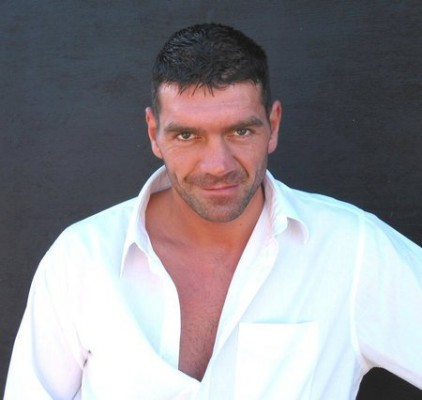
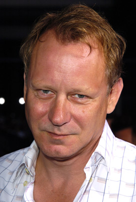
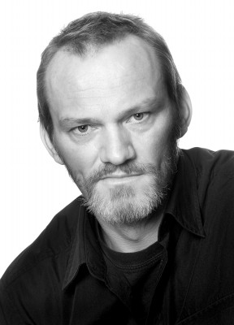
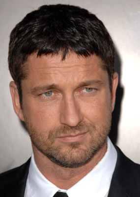
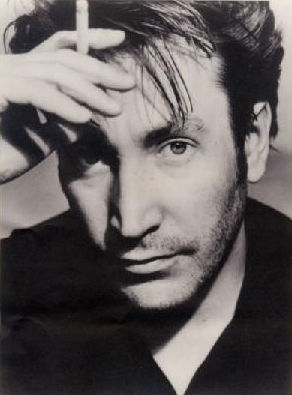
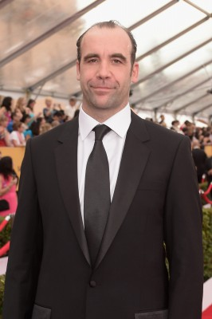
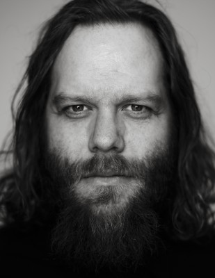
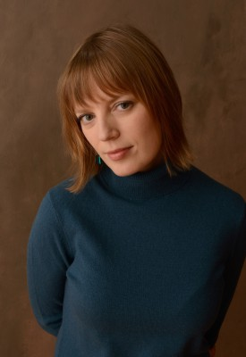
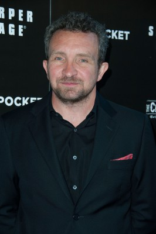

#4609 Beowulf & Grendel


 IMDB-Wertung: 5.9 / 10
IMDB-Wertung: 5.9 / 10  Metascore: 0
Metascore: 0 
Dänemark um das Jahr 500: Der mit übermenschlichen Kräften ausgestattete Hüne Grendel verbreitet Angst und Schrecken, indem er das Land mit einer Blutspur überzieht. Er will Rache, weil König Hrothgar einst seinen Vater ermordete. Kein Krieger aus Hrothgars Gefolge scheint Grendel gewachsen zu sein, bis der berühmte gotische Held Beowulf, der über die Kraft über 40 Männern verfügt, mit seinen Gefolgsleuten am Hofe Hrothgars eintrifft. Beowulf will Hrothgar helfen, weil dieser seinem Vater einst Unterschlupf gewährte, als dieser aus wegen einer Fehde aus seinem Reich fliehen musste und sagt dem gefährlichen Gegner den Kampf an…
Jahr: 2005
Dauer: 104 Minuten
FSK:
Land: Kanada Studio: MC-OneTonspuren: DTS - ,
Untertitel:
Auflösung: 1080p (1920x816) Größe: 7680 MB
Genre: Action, Drama, Abenteuer, Fantasy
Regisseur: Sturla Gunnarsson
Drehbuch: Ike Barinholtz
Soundtrack:
Darsteller:
-  Spencer Wilding als Grendel's Father
-  Stellan Skarsgård als Hrothgar
-  Ingvar Eggert Sigurðsson als Grendel
-  Gerard Butler als Beowulf
- Philip Whitchurch als Fisherman
-  Ronan Vibert als Thorkel
-  Rory McCann als Breca
 Tony Curran als Hondscioh
Tony Curran als Hondscioh- Martin Delaney als Thorfinn
-  Ólafur Darri Ólafsson als Unferth
- Steinunn Ólína Þorsteinsdóttir als Wealtheow
-  Sarah Polley als Selma
-  Eddie Marsan als Father Brendan
- Gísli Örn Garðarsson als Erik
- Gunnar Hansson als Grimur
- Matt John Evans als Geat Warrior
- Don Ellione als Dead Guard , uncredited
- Guðmundur Karl Sigurdórsson als Dead Guard , uncredited
- Hringur Ingvarsson als Young Grendel
- Gunnar Eyjólfsson als Aeschere
- Mark Lewis als King Hygelac
- Elva Ósk Ólafsdóttir als Sea Hag
- Benedikt Clausen als Selma's Child
- Steindór Andersen als Snorri
- Jon Einarsson Gustafsson als Geat Warrior
- Þröstur Leó Gunnarsson als Guard
- Arnór Hákonarson als Rock Throwing Kid
- Þórður Helgi Guðjónsson als Rock Throwing Kid
- Kristín Hrönn Gunnarsdóttir als Dead Woman
- Daði Freyr Guðjónsson als Woman's Child
- Egill Ólafsson als Necrophile
- Helgi Björnsson als Man
- Sigurdur Mar Halldorsson als Geat Musician , uncredited
- Helgi Marteinn Ingason als Geat , uncredited
- Tómas Axel Ragnarsson als Geat , uncredited
- Bárður Smárason als Geat , uncredited
Datei: X:\2005(A-F)\Beowulf & Grendel (2005, FSK, 1920x816).mkv seit 24.10.2016
Festplatte: HD 2003-2004-2005(A-F)
 Es gibt insgesamt 49 Filme in der Gruppe '2005(A-F)'
Es gibt insgesamt 49 Filme in der Gruppe '2005(A-F)'